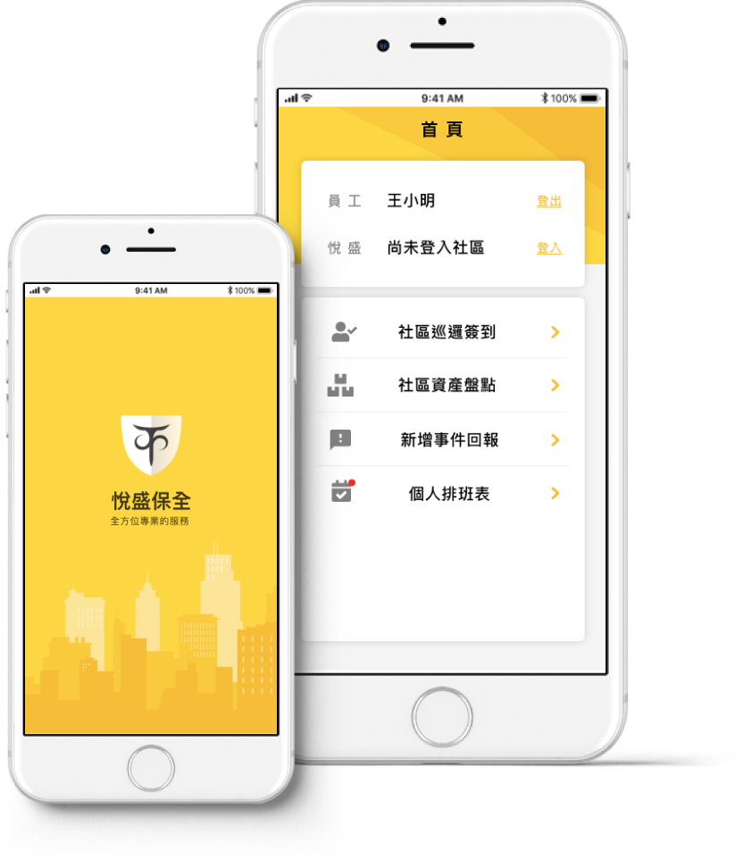
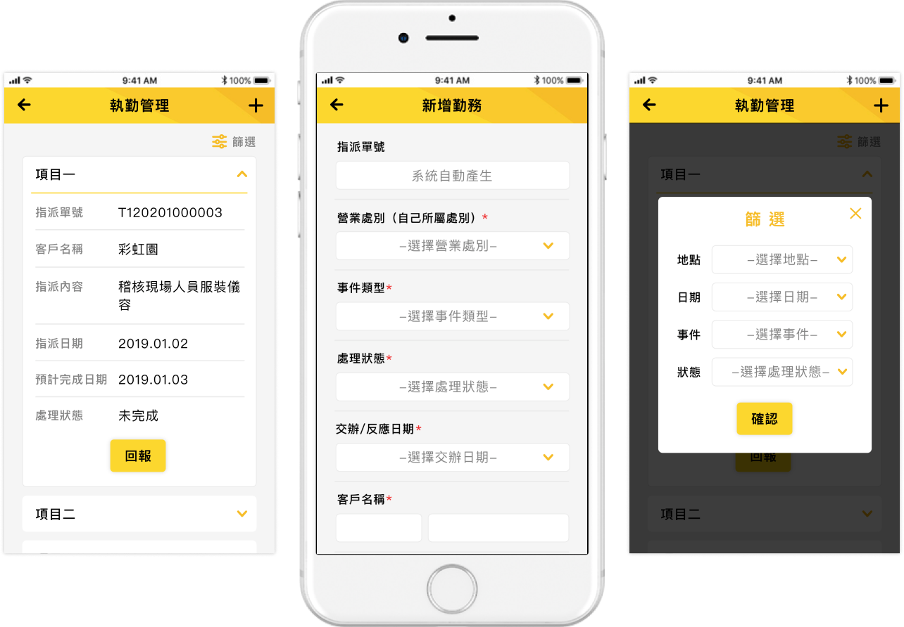
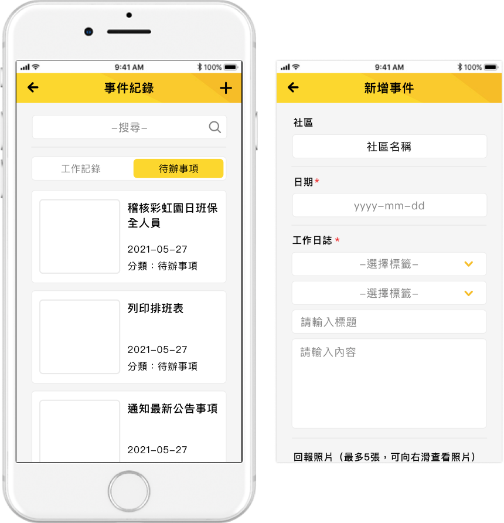

2021
保全巡邏系統APP
利用手機隨身帶著走的特性，以QR code掃描的方式進行巡邏點簽到， 讓保全及執勤人員能更確實地執行勤務，並即時回報事件及查看紀錄。
類型：APP設計
製作日期：2020.09
使用工具：Illustrator、XD、Zeplin

Overview
利用掃描巡邏地點的QR code進行巡邏點簽到，解決使用紙本簽到的弊端，讓工作人員能夠確實執行業務，也能透過App即時查看任務和回報，增加工作效率。
主視覺配合公司Logo黃色搭配灰色及白色來進行設計，並加大字體讓年紀較長的使用者也能輕鬆閱讀。
Features
社區巡邏/資產盤點
個人排班表
稽核人員訪查
執勤管理
事件紀錄
列出巡邏路線/資產狀態，點擊項目進入掃描巡邏點QR code、拍攝照片與填寫回報敘述，完成全部巡點送出完成巡邏。
顯示個人在各個社區之班表時間及內容，並可以預選次月休假日期。
稽核人員時掃描被稽核人員QR code、拍照及填寫評分表，最後由被稽核人員簽名確認該次稽核內容。

顯示執勤人員的任務清單，除了即時回報處理狀態也可新增勤務項目。

列出所有的待辦事項及工作記錄以便查詢並可新增紀錄。